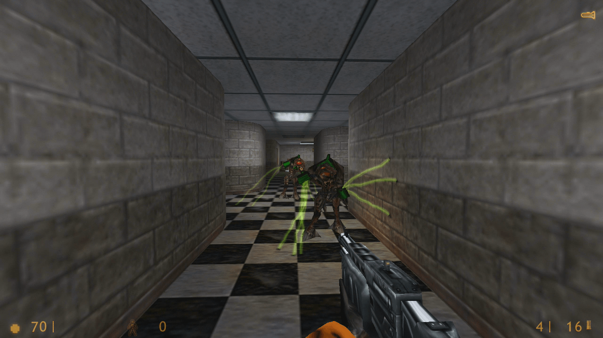
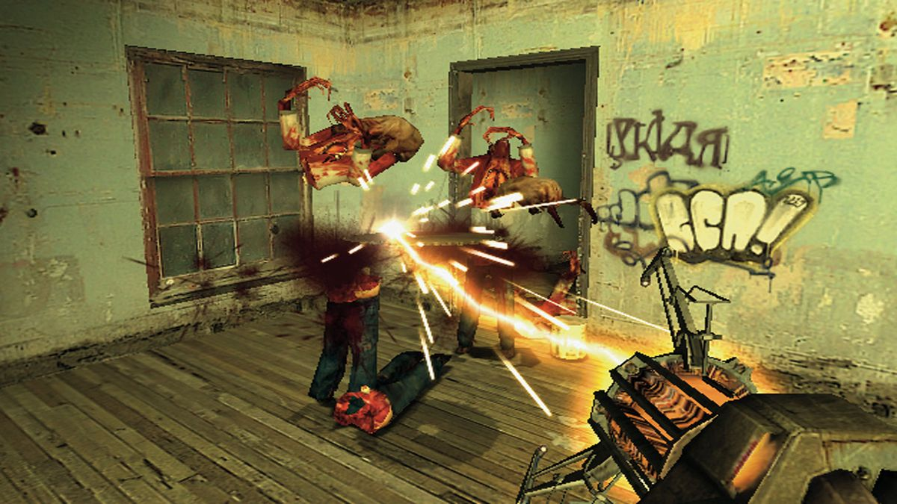
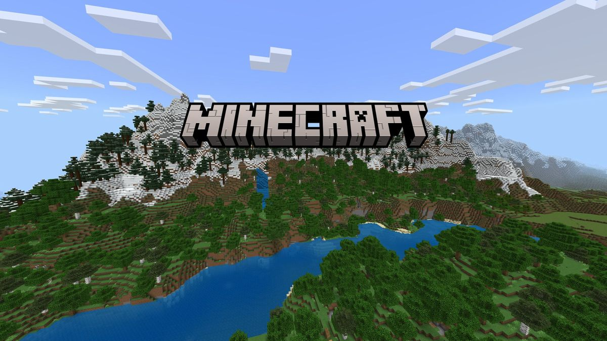

Ovviamente sarebbe fisicamente impossibile rappresentare e parlare di TUTTA l'evoluzione del nostro passatempo preferito, quindi al posto di attaccare oltre 1400 link di Wikipedia abbiamo deciso di creare una pagina specifica per parlare di 3 dei nostri videogiochi preferiti, per lo più 3 tra i più importanti e rivoluzionari giochi della nostra età moderna (almeno due di questi lo sono, poi c'è Fortnite).
Nell'anno 1996, due ex-impiegati della Microsoft, Gabe Newell e Mike Harrington, formarono la Valve Corporation, inizialmente Valve L.L.C. Durante questo periodo svilupparono il primo software che rilasceranno sotto il nome Valve, Half-Life. Inizialmente chiamato Quiver (come riferimento a una base militare fittizia della novella "The Mist" di Stephen King), il nome Half-Life è stato scelto al posto di quello originale perché corrispondeva ai temi del gioco.
Era originale e, in aggiunta, aveva un simbolo nell'alfabeto greco λ (la lambda minuscola). Su internet esistono ancora molteplici video di dimostrazione e anche una versione del gioco datata 1997, ma questa versione non ha mai visto la luce del giorno in maniera ufficiale. Dopo molteplici playtest, tutti sono arrivati alla conclusione che il gioco semplicemente non era abbastanza divertente.
Quindi, da quel punto in poi, tutti i programmatori alla Valve spesero il resto dell’anno per finire quella che sarebbe stata la versione finale del gioco. Il 19 novembre del 1998, Half-Life fu rilasciato e immediatamente fu riconosciuto come lo “sparatutto in prima persona" più innovativo e rivoluzionario nella storia dei videogiochi.
Il gioco fu sviluppato sul GoldSrc engine, una versione modificata del motore di gioco utilizzato da Quake, un altro sparatutto della ID Software, il cui source code fu pubblicato dal creatore John Carmack il 21 dicembre del 1999. Ovviamente, però, Half-Life iniziò a essere sviluppato molto prima di questo fatto. Valve ha dovuto pagare per la licenza del source code. Tra i molteplici motivi per cui ho scelto questo gioco come mio preferito, a parte la sua importanza storica e altri fattori, c'è la modalità Deathmatch che fa parte del gioco. È incredibile quanto divertimento si possa trarre da una singola modalità in un gioco che ormai è stato rilasciato 26 anni fa. La parte migliore è che in soli 7 anni sono riusciti non solo a superare Half-Life 1 sia tecnologicamente che tematicamente e a proseguire con la storia, ma sono anche riusciti a rivoluzionare il genere degli sparatutto in prima persona per la seconda volta di fila. Ma questa è una storia per un altro momento.
Markus "Notch" Persson era uno sviluppatore per una compagnia di videogiochi svedese chiamata King. Durante il suo tempo libero a casa, "Notch" creò molteplici prototipi e altri piccoli progetti. Tra questi, un gioco giocato da un punto di vista isometrico basato sulla costruzione di basi, chiamato "RubyDung". Inizialmente, il gioco aveva poco in comune con la versione di Minecraft che conosciamo oggi, in parte perché era un gioco diverso. Fu il rilascio di un altro gioco chiamato "Infiniminer", un gioco in prima persona basato sullo scavare per minerali in un mondo cubico, che ispirò Notch e trasformò "RubyDung" in quello che conosciamo oggi come Minecraft.
Il 17 maggio del 2009, la prima versione pubblica fu pubblicata sui forum di TIGSource, un forum che Notch utilizzava per mettersi in contatto con altri programmatori. Queste versioni del gioco sono ancora giocabili e possono essere aggiunte sul launcher ufficiale di Minecraft.
Dopo molteplici aggiornamenti e perfezionamenti, la formazione della compania Mojang e molto probabilmente ore e ore di codice da scrivere e poco sonno, nel 2011 la prima versione di Minecraft Ufficialmente Completa usci, e dopo qualche politica interna alla Mojang e un tweet da Notch sperando che una compania più grande comprasse stock nella loro compania, il CEO della Mojang Carl Manneh si ritrovo con una chiamata cruciale, Un direttore alla Microsoft ha fatto un offerta di 2,5 miliardi di dollari per l'intera compagnia e i diritti intellettuali di Minecraft. Potete immaginare come è andata a finire la chiamata.
Rilasciato nel 2017, Fortnite è sia un gioco online multiplayer che una piattaforma per giochi diversi. Il gioco è diviso in 6 distretti diversi: Save the World, Battle Royale e Creative sono i 3 distretti principali, mentre Rocket Racing, Lego Fortnite e Fortnite Festival sono modalità aggiuntive. Ovviamente, tra tutte queste, la modalità Battle Royale era e rimane la modalità più giocata e il motivo per cui il gioco viene riconosciuto oggi.